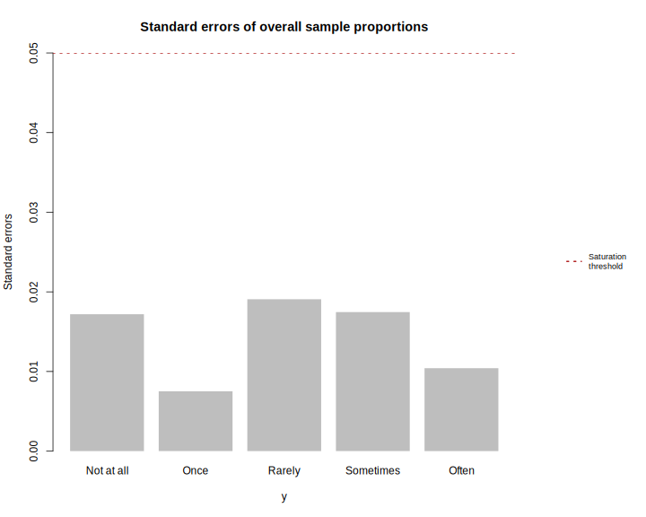
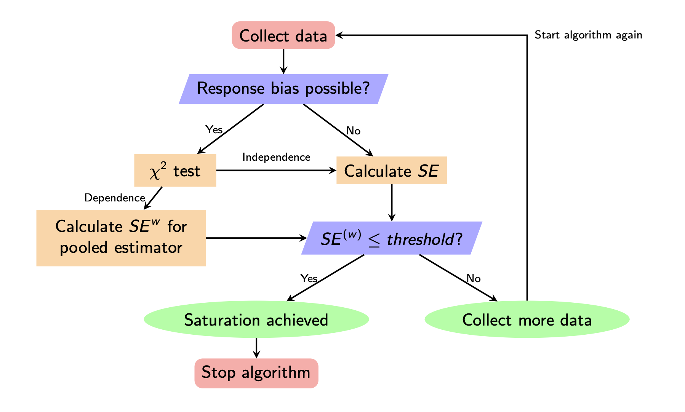

This R package identifies the saturation point of multinomial responses from a survey using standard errors of sample proportions.
Installation
You can install the current released version of satpt from CRAN with
install.packages("satpt")Development version
To get a bug fix or to use a feature from the development version, you can install the development version of satpt from GitHub.
# install.packages("remotes")
remotes::install_github("deboonstra/satpt")Usage
For basic usage of satpt simply specify the responses of the survey in y and the data collection period information in by, as seen below.
library(satpt) # load package
data(ein) # load example ein data
res <- satpt::satpt(y = ein$q2, by = ein$wave)
print(res)#> Analysis based on: y
#> Saturation achieved? Yes
#>
#> Overall Sample Proportions and Standard Errors
#> ==============================================
#> y: y
#> Statistics Not at all Often Once Rarely Sometimes
#> Proportion 0.2531 0.0750 0.0375 0.3688 0.2656
#> SE 0.0172 0.0104 0.0075 0.0191 0.0175Saturation of each individual response category may be examined graphically while comparing the standard errors to the saturation threshold.
graphics::par(oma = c(0, 0, 0, 8))
plot(res)
# adding legend
satpt::legend_right(
legend = "Saturation\nthreshold",
col = "firebrick", lty = 3, lwd = 2,
cex = 0.75
)
Methodology
Presented below is a simplified version of the algorithm that is employed in satpt to determine whether saturation of the responses has been achieved and whether pooled standard errors should be calculated to account for response bias.

Learn more
To get started, first read the Getting started with satpt vignette. Then, read more about how satpt may handle Select All Apply question in the Impelementing with select all apply questions vignette.